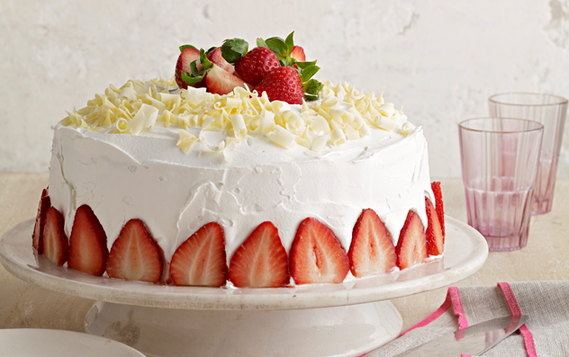

paspel
Pastel
Paspel is like a dessert and it is important because it is something that cannot be missed on a birthday.

Ingredients
- arina
- huevos
- Water
- strawberry
- leche
- vannia
Method
- Put the arina en un plato ancho y grande
- Then you make a hole in the middle of the flour, add 4 or 5 eggs and stir it
well.
- Afterwards, you put the dough on a plate to put it in the oven and leave it for
30 or 45 minutes.
- Then you made vain around the dough.
- If you want you can put fruntra with strawberry and melon, banana.